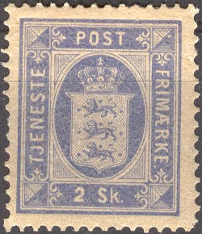
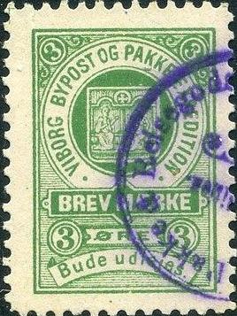
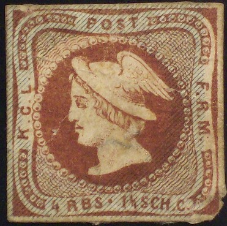
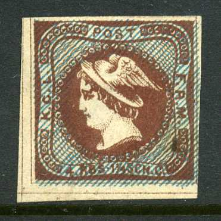
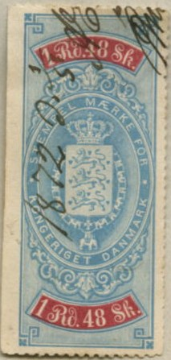
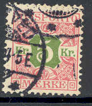
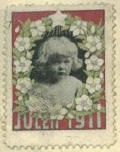
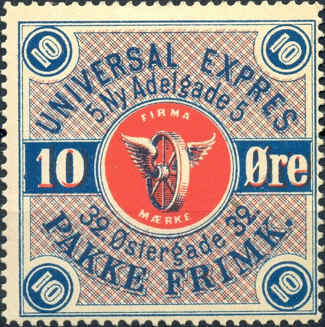
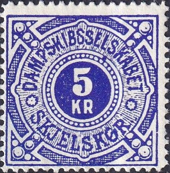
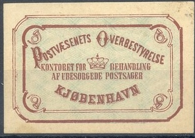

{kind=link}



Return To Catalogue - Denmark - Denmark Railway Stamps - Skandinavia Railway Stamps - Bypost (local post of Norway, Denmark and Sweden), overview
Note: on my website many of the
pictures can not be seen! They are of course present in the
catalogue;
contact me if you want to purchase it.
2 s blue 4 s red 16 s green
These stamps have watermark 'Crown'.
Value of the stamps |
|||
vc = very common c = common * = not so common ** = uncommon |
*** = very uncommon R = rare RR = very rare RRR = extremely rare |
||
| Value | Unused | Used | Remarks |
| 2 s | RR | RR | Perforated 14 x 13 1/2 |
| 4 s | *** | *** | Perforated 14 x 13 1/2 or 12 1/2 (RR) |
| 16 s | RR | RR | Perforated 14 x 13 1/2 or 12 1/2 (RR) |
Reprints without watermark and no perforation exist.

Reprints of the 2 Sk and 16 Sk values.
I have seen postal stationery in the value 2 s blue.
1 o orange 3 o lilac 3 o grey 4 o blue 5 o green 5 o brown 8 o red 10 o red 10 o green 15 o violet 20 o blue 32 o green
Value of the stamps |
|||
vc = very common c = common * = not so common ** = uncommon |
*** = very uncommon R = rare RR = very rare RRR = extremely rare |
||
| Value | Unused | Used | Remarks |
watermark 'Crown' and perforation 12 1/2 |
|||
| 1 o | c | c | |
| 3 o lilac | * | c | |
| 4 o | * | * | |
| 5 o green | * | c | |
| 8 o | * | * | |
| 10 o red | * | c | |
| 32 o | *** | *** | |
| watermark 'Crown' and perforation 14 x 13 1/2 | |||
| 3 o | ** | ** | |
| 4 o | ** | * | |
| 8 o | *** | *** | |
| watermark 'Cross' and perforation 14 x 14 1/2 | |||
| 1 o | c | c | |
| 3 o grey | * | * | |
| 4 o | ** | * | |
| 5 o green | * | c | |
| 5 o brown | *** | *** | |
| 10 o red | *** | * | |
| 10 o green | * | c | |
| 15 o | ** | ** | |
| 20 o | *** | * | |
Surcharged
'35 ORE FRIMAERKE' on 32 o green (1912, to be used as postage stamp) 'DENMARK 80 ORE FRIMAERKE' on 8 o red (1915, to be used as postage stamp) 'DENMARK 7 ORE FRIMAERKE' on 1 o orange (1926, to be used as postage stamp) 'DENMARK 7 ORE FRIMAERKE' on 3 o grey (1926, to be used as postage stamp) 'DENMARK 7 ORE FRIMAERKE' on 4 o blue (1926, to be used as postage stamp) 'DENMARK 7 ORE FRIMAERKE' on 5 o green (1926, to be used as postage stamp) 'DENMARK 7 ORE FRIMAERKE' on 10 o green (1926, to be used as postage stamp) 'DENMARK 7 ORE FRIMAERKE' on 15 o violet (1926, to be used as postage stamp) 'DENMARK 7 ORE FRIMAERKE' on 20 o blue (1926, to be used as postage stamp)
Value of the stamps |
|||
vc = very common c = common * = not so common ** = uncommon |
*** = very uncommon R = rare RR = very rare RRR = extremely rare |
||
| Value | Unused | Used | Remarks |
| 35 o on 32 o | * | * | |
| 80 o on 8 o | *** | *** | |
| 7 o on 1 o | * | * | |
| 7 o on 3 o | * | * | |
| 7 o on 4 o | * | * | |
| 7 o on 5 o | *** | *** | |
| 7 o on 10 o | * | * | |
| 7 o on 15 o | * | * | |
| 7 o on 20 o | ** | ** | |
I've seen postal stationery of the (unsurcharged) values: 3 o grey, 4 o blue, 5 o green, 8 o red,
Besides the normal postage stamps with "PORTO" overprint (issued in 1921, see under normal postage stamps), special postage due stamps were issued in 1921. They have the inscription "DANMARK PORTO". The following values were issued: 1 o orange, 4 o blue, 5 o brown, 7 o green, 10 o green, 20 o green, 25 o red, 25 o violet, 1 K blue, 1 K brown and blue and 5 K violet. The value 10 o green also exists with "GEBYR GEBYR" overprint. Example:
The first 'Official seal' was issued in 1878, it has inscription "POSTVAESENETS OVERBESTVRELSE KONTORET FOR BEHANDLING AF UNBESORGEDE POSTSAGER KJOBENHAVN" with a crown in the center in the colour brown with a green background pattern. Similar stamps were issued in 1890 and 1915 (smaller design), these stamps have inscription "GENERALDIREKTORATET FOR POSTVAESENET" (both in colour brown). Pictures of these stamps can be found at http://www.poseal.com/.
(For more local issues see: Bypost stamps)
Kolding

Viborg

Two different types, borders similar left King design and right
Mercury design (genuine?)
The above stamp is an essay of Denmark made in 1860: head of the King to the right in a circle, inscription on top "POST", right "F.R.M", left "K.G.L." and "8 RBS 2 1/2 SCH. C." at the bottom. The colour of this proof is brown (with blue underprint). There also exists another essay with the head of Mercury facing the left, (4 RBS 1 1/4 SCH. C.).
Forgeries exist. Melville in his Chats on Postage Stamps, page 240 says: but there was also a Brunswick dealer who " tried his hand at the Danish essays,", when discussing forgeries. The same sentence can be found in Lewis and Pemberton 'Forged Stamps' (1863) on page vi and page 13. In both genuine essays, the pearls of the central circle enter the space with "K.G.L." in the forgeries they don't.

Forgery (possibly the one described in Lewis and Pemberton). The
kings ear is more visible than in the genuine essay. The beard is
too short.

Different type, probably some kind of later reproduction of a
1852 Ferslew essay (possibly the forgery described in Lewis and
Pemberton). The back wing is not visible all the way (compare
with a genuine stamp above). The wavy pattern is too far away
from the square outer rectangle (in the genuine stamp it touches
the outer recangle in several places). The '4' is different. The
blue shading lines are too prominent.
Other essays:
Essay from 1867 with arms in the center, reduced size.

Essay of 1867 with the portrait of the king and "S" in
the bottom right corner. I've also seen this essay in the color
black.

8 Sk blue with image of the king, inscription "KONGEN AF
DANMARKS BRYSTSUKKER LA PATRIA CHR.L.LANGE KJOBENHAVN", an
advertisement label for sugar? I've also seen the value 16 Sk
red.


Essays from 1901

The following values exist 4 'fire' sk green , 8 'otte' sk brown, 16 sk blue, 32 sk lilac, 48 sk red, 1 R brown and blue, 1.48 R blue and red and 2 R red and brown.

The following values were issued: 5 o red and green, 10 o green, 15 o red and grey, 20 o black and grey, 30 o red and blue, 35 o blue, 65 o red and yellow, 70 o yellow, 1 K brown and red, 2 K black and red, 3 K red, 4 K blue and red, 10 K blue and red (value black) and 20 K blue and red (value black). New colours were issued around 1913: 25 o, 40 o, 50 o, 60 o, 75 o, 80 o, 90 o, 5 K, 6 K, 7 K, 8 K, 9 K, 40 K and 50 K (ore values in green and red colour and Krone values in brown and red colour).

5 o green (1934) 10 o green 10 o brown (1931) 10 o orange (1934)
Another set of fiscal stamps was issued in 1872 (Obligationsstempel), 16 values, all in the colour red and blue. Sorry, no picture available yet, if anybody posesses a picture, please contact me!
Other design: "FAKTURASTEMPEL"
In the above "FAKTURASTEMPEL" design I have seen: 50 Kr, 60 Kr, 90 Kr and 100 Kr. All are in brown colour with the value in black and have 'Nr. 2' printed in black at the top of the stamp.
Literature: 'Scandinavia Revenues European Philately 14' by J.Barefoot Ltd, 52 pages (I haven't seen this book myself).

(Reduced sizes)
1 o olive 5 o blue 7 o red 8 o green 10 o brown 20 o green 29 o yellow 38 o yellow 41 o brown 68 o brown 1 K green and red 5 K red and green 10 K brown and blue
For the specialist: these stamps exist with watermark 'Crown' and perforation 12 1/2 or watermark 'Cross' and perforation 14 x 14 1/2 (the latter issued in 1915).
Value of the stamps |
|||
vc = very common c = common * = not so common ** = uncommon |
*** = very uncommon R = rare RR = very rare RRR = extremely rare |
||
| Value | Unused | Used | Remarks |
watermark 'Crown' and perforation 12 1/2 |
|||
| 1 o | * | c | |
| 5 o | ** | c | |
| 7 o | ** | c | |
| 10 o | *** | c | |
| 20 o | *** | c | |
| 38 o | *** | c | |
| 68 o | *** | * | |
| 1 K | *** | c | |
| 5 K | RR | ** | |
| 10 K | RR | ** | |
| watermark 'Crown' and perforation 14 x 13 1/2 | |||
| 1 o | * | c | |
| 5 o | *** | * | |
| 7 o | *** | c | |
| 8 o | *** | * | |
| 10 o | *** | c | |
| 20 o | RR | * | |
| 29 o | R | ** | |
| 38 o | RRR | *** | |
| 41 o | R | ** | |
| 1 K | R | * | |
These stamps exist with overprint "POSTFRIM. ORE 27 ORE DANMARK" (see under normal postage stamps).
Forgeries exist of the 38 o. They were made by 'repainting' a more common 29 o stamp. The shades of these two stamps are different however (source: Serrane guide).
ENVELOPES
(Reduced sizes)
2 s blue 2 blue 4 s red 4 red 4 blue 8 red

In the same design I have seen 7 o orange and 10 o red.
(Reduced sizes)
A nice website on these stamps can be found at:https://www.jaysmith.com/Resource/Articles/den_postfaerge_forgeries.html


The 1 K has a "Fano - Esbjerg" cancel.
10 o red 15 o violet 30 o orange (1922?) 30 o blue (1926) 50 o red and black 50 o grey (1922?) 1 K brown (slightly different design) 1 K brown and blue 5 K violet and brown (1941?) 10 K red and green (1930)
Value of the stamps |
|||
vc = very common c = common * = not so common ** = uncommon |
*** = very uncommon R = rare RR = very rare RRR = extremely rare |
||
| Value | Unused | Used | Remarks |
| 10 o | *** | *** | |
| 15 o | * | * | |
| 50 o | RR | RR | |
| 1 K | *** | *** | |

This might be a forged overprint. The ferry stamps received
special cancels only not resembling town cancels, except for some
very rare usage in Kopenhagen as normal postage stamps (which was
forbidden on 20 June 1919)..
5 o red-brown without small dots below and above 'DANMARK', lined background, 1941?) 10 o green (with small dots below and above 'DANMARK', solid background) 10 o brown (with small dots below and above 'DANMARK', solid background, 1930) 10 o brown (without small dots below and above 'DANMARK', lined background, 1930?) 10 o orange (without small dots below and above 'DANMARK', lined background, 1936) 10 o lilac (without small dots below and above 'DANMARK', lined background, 1939)

Ship on solid background 15 o red 30 o orange 40 o green (1930) Ship on lined background (1936) 15 o red 30 o blue 30 o orange (1941?) 40 o light green 40 o blue (1941?)

50 o grey 1 K brown
Examples:

Many of these labels were issued.
"UNIVERSAL EXPRESS 5.Ny Adelgade 5 32.Ostergade 32 PAKKE FRIMK."

10 o blue and red and 20 o blue and red



(Reduced size)
I have seen the values: 5 o black on yellow, 10 o black on blue, 25 o black on lilac, 50 o black on green, 1 K red on yellow and 5 K blue.
1885 different design, 35 o black text on white. Image obtained
thanks to Lasse Hult
(Image of steamship)
(Steamship, image obtained thanks to Lasse Hult, reduced size)
(Steamship, image obtained thanks to Lasse Hult, reduced size)
(Image obtained thanks to Lasse Hult)
7 Values were issued: 15 o black on red 20 o brown 25 o red 30 o green 50 o blue 100 o violet 10 o, 5 kg orange (larger size)


Thor's hammer(?)
In this design were issued:
In the big sized design: 25 o red (1903), 10 o blue, 90 o green,
"+ 10 ØRE" (violet) on 25 o (1917, see image above),
"60" on 25 o red.
Smaller sized design (1925 onwards), with a tiny "19"
printed at the bottom: 10 o blue, 25 o red (see image above), 30
o brown, 50 o green
Smaller sized design (1927), without the small "19" at
the bottom: 10 o blue, 10 o grey, 25 o red, 30 o brown, 40 o
yellow, 50 o green, 75 o green, 90 o violet (1946), 100 o red
(1959), 110 o yellow, 125 o blue (1959); "110" on 40 o
yellow, "330" on 30 o brown, "400" on 110 o
yellow.
1963 issue: "D/S AERO AEROSKOBING - SVENDBORG" ferry: 1
kr red. I've also seen 25 o green and 75 o blue. Also
"4,40" on 1 kr red, "5,50" on 1 kr red,
"6,60" on 1 kr red.
Inscription "Feltpost", example:

The first airmail stamps of Denmark were issued in 1925, the inscription reads "DANMARK LUFTPOST". The values 10 o green, 15 o violet (1926), 25 o red, 50 o grey (1929) and 1 K brown (1929) were issued:
The next airmail stamps appeared in 1934 and had an image of an earoplane over Kopenhagen: 10 o orange, 15 o red, 20 o green, 50 o grey and 1 K brown.

brown and green
brown brown (reduced size, 28 x 18 mm, 1915)
I've also seen red labels with "GENERALDIREKTORATET for Post-og Telegrafvaesenet Brevadnings Kontoret" in red color (imperforate).
{kind=link}
{kind=link}
{kind=link}
{kind=link}
{kind=link}
{kind=link}
{kind=link}